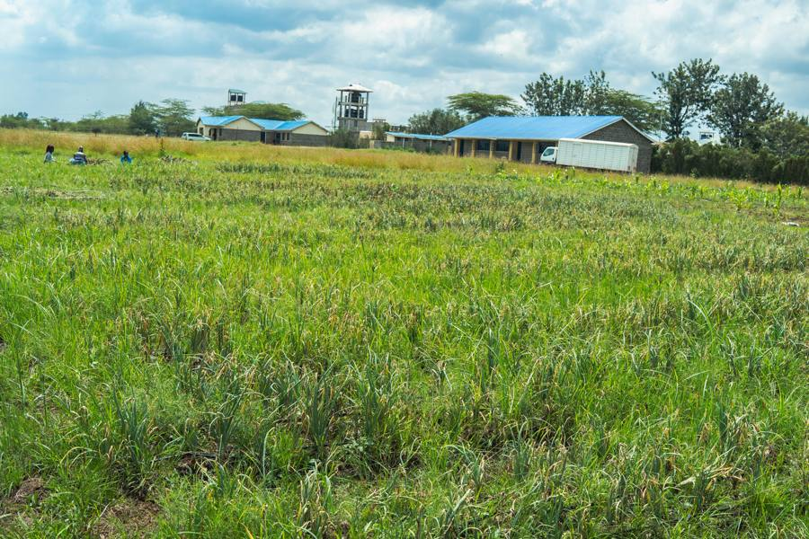

The land is already there.
The system isn’t.
School Farm Network turns underused land at African schools into professionally operated farms that produce food, create jobs, train the next generation of farmers and help fund school meals.
Hungry students sit beside empty fields.
Land at African schools stays unplanted for a reason. Growing food at scale takes operators, agronomy, buyers, working capital and records, and no one has brought those to the school gate. Programmes hand over seeds and leave. We stay and run the farm.
One system, run on every farm.
We assess.
Land, water, tenure, access and commercial viability, checked before anything is built. Farms that shouldn’t exist, don’t.
We build.
Irrigation, storage and fencing, installed by our team. This is where the capital goes.
We farm.
A paid local crew plants, tends and harvests to a plan, with roles prioritised for women and for people aged 18 to 35.
We account.
Every cycle is weighed, costed and recorded. What the farm produced, what it paid, what the school received.
The system is the part nobody else builds: operators · infrastructure · agronomy · offtake · data · training · financing, on the ground and in one set of records.
Onions, Seeds2Education, May 2026. Source: harvest and weighing records. One site, one cycle.
A two-school, two-cycle pilot, running now.
The same records, the same standards, at every site.
We publish what is verified, and say what is not yet.


Three ways in.
I run a school
You contribute the land and receive an agreed benefit, primarily meals. You carry no operating cost and no commercial risk. Land, water and access are checked first.
Register interestI fund infrastructure
Catalytic capital builds irrigation, storage and operations, and buys the time to prove the model repeats. You invest in a system, not a season.
Invest in the buildI buy produce
Committed offtake at a fair price shapes what we plant. Demand is worth more to these farms than donations.
Discuss offtake